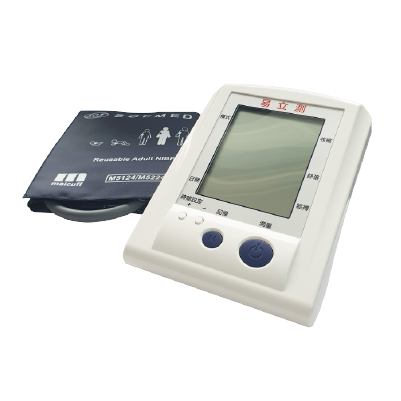
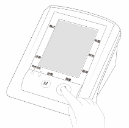

手機號碼（帳號）
密碼（預設為i顧健康識別碼）
送出
註冊帳號
忘記密碼
V------
個資保密條款
申請人使用本系統加入會員時，已確認填寫之個人基本資料無誤，並視為您本人同意加入本服務平台會員，於平台服務範圍協助會員作自主性健康管理之用途。
基於遵守「個人資料保護法」及相關法令，不得侵犯個人隱私權。本服務平台提供之各項加值應用服務，會員享有個人健康紀錄整合之權利。會員之個人基本資料、生理量測 紀錄，提供個人健康查詢紀錄，目的促進會員健康之行為，並同意授權相關單位之特定 目的內蒐集、處理及利用。本平台服務期間內會員可查詢個人健康量測記錄，亦得隨時 停止蒐集會員相關健康紀錄，不影響會員之 既有權益。
完成本服務之註冊流程後，申請人將收到一組預設密碼之簡訊。第一次於入口網登入本系統時，會強制要求更改密碼。
同意
手機號碼（帳號）
姓名
身分證字號
性別
男
女
出生年月日
信箱
居住縣市及鄉鎮
台北市
新北市
桃園市
第一區
第二區
第三區
我要註冊
手機號碼（帳號）
電子信箱
生日
i顧健康服務平台會將您的密碼
以簡訊方式發送至您的手機
送出
標頭
X
血糖量測提醒
三高機操作說明
三高量測標準值範圍
藥師量測三高
林小花（顯示姓名）
個人資料
登出
版本序號
血糖
--
mg/dL
午餐後
----/--/-- --:--
血壓
收縮壓
--
mg/dl
舒張壓
--
mg/dl
脈搏
--
次/分
----/--/-- --:--
膽固醇
--
mg/dl
----/--/-- --:--
血壓
血糖
膽固醇
2天
7天
14天
30天
60天
120天
量測時間數值後的*
代表該筆數值是透過聿新三高機藍牙接收
量測時間
量測時段
血糖值
2021-05-14 13:24*
午餐後
120
備註：午餐的飯量為半碗飯
2021-05-14 13:24*
午餐後
120
備註：午餐的飯量為半碗飯
2021-05-14 13:24*
午餐後
120
備註：午餐的飯量為半碗飯
量測時間：
2021-05-14 (五) 13:24
量測時段：
2021-05-14 (五) 13:24
血糖值：
2021-05-14 (五) 13:24
新增備註：
儲存
血壓
血糖
膽固醇
請留意手動輸入之量測數值，
不納入本服務平台激勵點數之計算範圍。
測量時間：
測量時段：
血糖值 mg/dl：
儲存
血壓
血糖
膽固醇
請留意手動輸入之量測數值，
不納入本服務平台激勵點數之計算範圍。
測量時間：
收縮壓 mmHg：
舒張壓 mmHg：
脈膊 次/分：
儲存
血壓
血糖
膽固醇
請留意手動輸入之量測數值，
不納入本服務平台激勵點數之計算範圍。
測量時間：
膽固醇 mg/dl：：
儲存
早餐
餐前
上午 7:00
上午 8:00
上午 9:00
餐後
上午 7:00
上午 8:00
上午 9:00
午餐
餐前
上午 7:00
上午 8:00
上午 9:00
餐後
上午 7:00
上午 8:00
上午 9:00
晚餐
餐前
上午 7:00
上午 8:00
上午 9:00
餐後
上午 7:00
上午 8:00
上午 9:00
就寢
睡前
上午 7:00
上午 8:00
上午 9:00

血壓/血糖/膽固醇監測系統
開啟手機藍牙。
三高機啟動藍牙conn連線：
按住＋不放，再按-，開啟藍牙。
點擊搜索設備，於清單中挑選欲配對的設備。
出現配對成功訊息，關閉三高機。

血糖（兒童及青少年第 1 型糖尿病）
空腹血糖
90 - 130 mg/dL
睡前血糖
90 - 150 mg/dL
血糖（成年人—20~65歲）
空腹血糖
80 - 130 mg/dL
睡前血糖
80 - 160 mg/dL
血糖（妊娠型）
空腹血糖 (飯前/餐前血糖)
< 95 mg/dL
餐後1小時血糖
< 140 mg/dL
餐後2小時血糖
< 120 mg/dL
血糖（老年人—超過65歲）
空腹血糖
90 - 130 mg/dL
睡前血糖
90 - 150 mg/dL
血壓
收縮壓
90 - 119 mmHg
舒張壓
60 - 79 mmHg
脈搏
60 - 100 次/分
膽固醇
膽固醇
120 - 199 mmHg
資料來源：2018 糖尿病臨床照護指引
手機號碼（帳號）
姓名
性別
男
女
出生年月日
居住縣市及鄉鎮
台北市
新北市
桃園市
第一區
第二區
第三區
確認修改